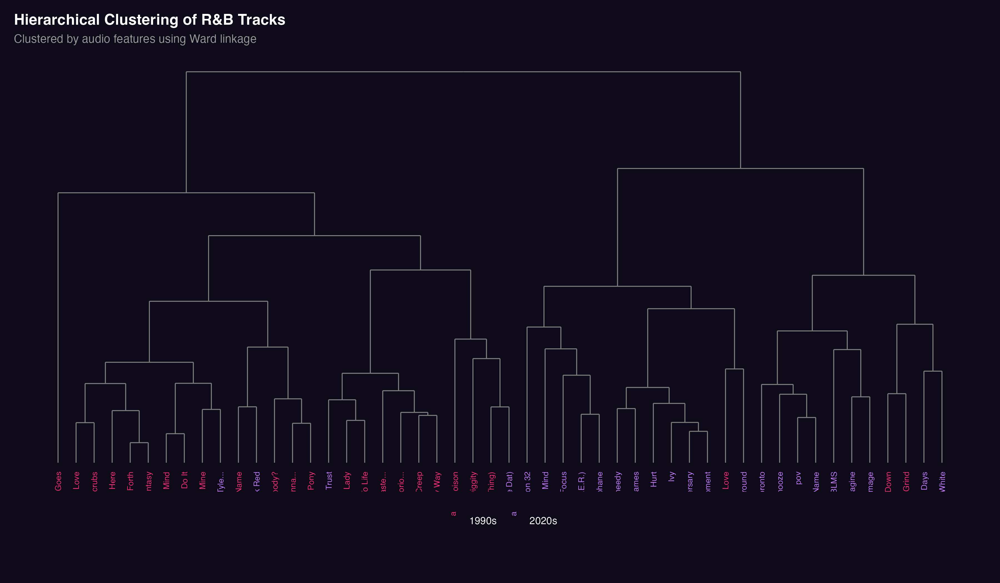
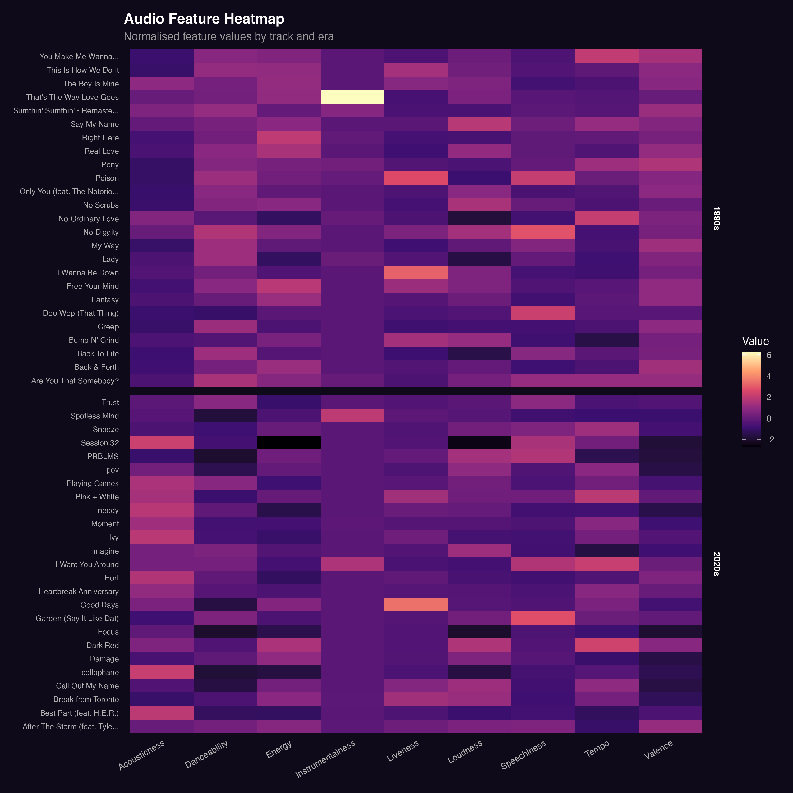
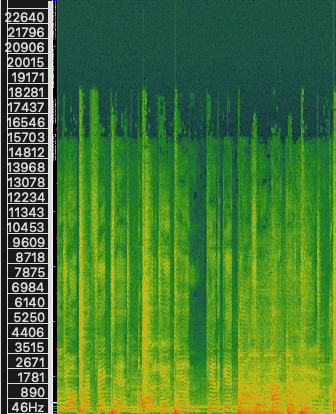
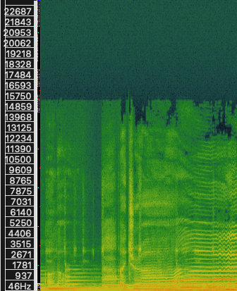
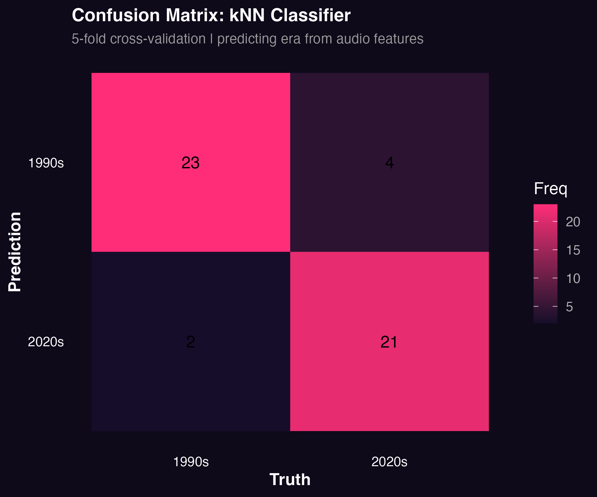

Clustering
This section examines how R&B has changed from the 1990s to the 2020s using hierarchical clustering and audio analysis. The goal is to determine whether differences between movement-oriented and mood-oriented music can be observed in the data and confirmed through direct sound analysis.
Analytical Approach
The analysis combines Spotify audio features with direct audio processing. For each track, features including danceability, energy, loudness, acousticness, valence, and tempo were used to perform hierarchical clustering. All features were standardised before clustering to ensure that no single variable dominates due to scale differences.
In addition, two representative tracks were selected for spectrogram analysis: No Diggity by Blackstreet (1990s) and Cellophane by FKA Twigs (2020s). These tracks were used to connect the statistical clustering results to audible differences in the music.
Hierarchical Clustering
Hierarchical clustering groups tracks based on similarity in their audio features. Rather than assigning songs to fixed categories, this method reveals how tracks are gradually related to each other producing a tree structure in which closely related tracks branch off at lower heights and more distant groupings merge at higher heights.
The aim is to examine whether tracks from the 1990s and 2020s naturally form separate clusters. If they do, this provides evidence that the musical style of R&B has shifted systematically over time.
Dendrogram
The dendrogram visualises how tracks are grouped based on feature similarity. Track labels are coloured by era pink for 1990s tracks and purple for 2020s tracks making it possible to see at a glance whether the two eras separate into distinct branches.

The results show a general separation between 1990s and 2020s tracks. Many 1990s songs cluster together due to higher energy, danceability, and loudness, while many 2020s tracks group around higher acousticness and a more atmospheric sonic profile. This suggests that the two eras occupy meaningfully different regions of the feature space.
Heatmap
The heatmap displays the normalised audio feature values for each track. Each row represents a song and each column represents a feature, with warmer colours indicating higher values.

The 1990s tracks generally show higher values for energy and danceability, supporting the idea that this era of R&B is more rhythm-driven. In contrast, 2020s tracks show higher acousticness and more variation in valence, indicating a shift toward emotional expression and atmosphere. The heatmap helps explain why the clusters in the dendrogram form as they do.
Spectrogram Comparison
To connect the clustering results to actual sound, two representative tracks were analysed using spectrograms in Sonic Visualiser. Spectrograms display the frequency content of audio over time, making it possible to observe rhythmic density, timbral texture, and structural patterns directly from the sound.

The spectrogram of No Diggity shows strong vertical lines representing clear rhythmic hits. The pattern is dense and consistent throughout the excerpt, reflecting a steady groove and strong rhythmic articulation. This supports the clustering result that 1990s R&B is built around rhythm and movement.

The spectrogram of Cellophane is more spread out and less dense. There are fewer strong rhythmic patterns and more sustained, continuous frequency content. This reflects a more atmospheric and emotionally oriented style, consistent with the higher acousticness and lower danceability values observed in the clustering analysis.
Classification: Can Audio Features Predict Era?
To test whether the differences between the two eras are strong enough to support classification, a k-nearest neighbours (kNN) classifier was trained to predict era, 1990s or 2020s, from audio features alone. The model was evaluated using 5-fold cross-validation to ensure the results are not specific to a single train-test split.
If the classifier performs well above chance (50%), it provides direct quantitative evidence that the two eras are genuinely separable by their Spotify audio features.

The confusion matrix shows how often the model correctly predicted each era. Correct predictions appear along the diagonal. High accuracy on both classes would confirm that 1990s and 2020s R&B occupy distinct regions of the audio feature space supporting the central claim of this project.
Key Findings
The clustering analysis and spectrogram comparison point in the same direction. At the feature level, 1990s R&B is characterised by higher energy, stronger rhythm, and greater danceability, while 2020s R&B places more emphasis on acoustic elements, space, and emotional variation. At the audio level, these differences are confirmed by the spectrograms, which show a clear contrast between the dense rhythmic structure of No Diggity and the more open, sustained texture of Cellophane.
Taken together, the results provide convergent evidence that R&B has shifted from a movement-focused style toward a mood-focused one, a pattern that is consistent across the statistical, visual, and acoustic dimensions of this analysis.